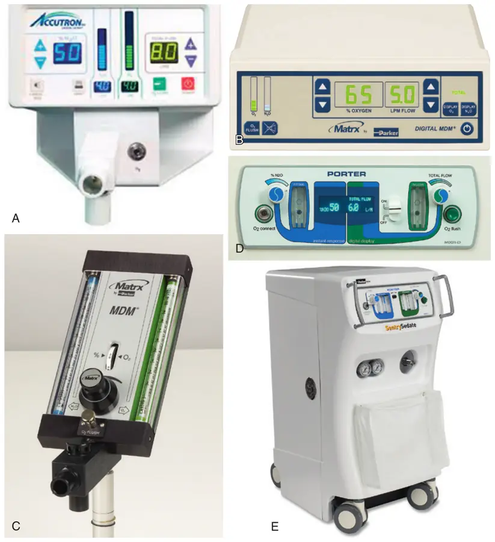

نسخه استخراجشده؛ ترجمه یا تأیید علمی انجام نشده است. وضعیت: captured
تکنیکهای اصلی برای جراحی دندانآلوئولی مشخصاند: در مندیبل بلاک آلوئولار تحتانی-لینگوال و بلاک باکال بلند؛ در ماگزیلا انفیلتراسیون باکال یا لبیال همراه با بیحسی پالاتال اعصاب اینسیزیو یا پالاتین بزرگ.

قاعدهی اول — سرعت: هرچه تزریق آهستهتر، درد کمتر. ولی یک تعادل مهم هم هست: سرعت کم تزریق باید در برابر اضطرابی که بیشتر بیماران تا وقتی تزریق ادامه دارد تحمل میکنند، سنجیده شود. یعنی آهسته بودن هم حدی دارد.
قاعدهی دوم — بافت پالاتال: تزریق در بافت کام به علت مقدار محدود بافت همبند شل موجود ناراحتکنندهتر است. درمانگر ناچار است فشار بیشتری به پیستون بیاورد، و همین تحویل پرفشار، درد میسازد. بیحسی سطحی ناراحتی را کم میکند ولی از بین نمیبرد.
قاعدهی سوم — آسپیراسیون: تزریق در نواحی با عروق خونی بزرگتر باید با آسپیراسیون پیش برود تا احتمال تزریق داخل شریانی کم شود. از میان تکنیکهای بحثشده، این دربارهی بلاک آلوئولار تحتانی و بلاک PSA صادق است.
قاعدهی چهارم — زمان: شروع اثر بسته به فارماکولوژی دارو و دقت رهاسازی دارو متفاوت است. پس باید زمان کافی بگذرد پیش از آنکه جراحی شروع شود.
و حالا مهمترین جملهی این درس: هنگام بیحس کردن اعصاب آلوئولار تحتانی، لینگوال و باکال، ناحیهی مورد انتظار باید از نظر توانایی بیمار در تشخیص یک محرک دردناک آزمایش شود، پیش از آنکه فرض کنی بیحسی عمیق برقرار است.
و صریح بدان: صرفاً پرسیدن از بیمار که آیا احساس بیحسی میکند، کافی نیست.
و دلیل فیزیولوژیک این نکته را حتماً بفهم: حس عمقی (پروپریوسپشن) بیمار با بیحسی موضعی از بین نمیرود. پس هم بیماری که ناکافی بیحس شده و هم بیماری که کاملاً بیحس شده، آن حس را حفظ میکنند.
نتیجهی عملی: پرسیدن از بیمار که آیا لمس لبش را حس میکند، روش درستی برای آزمودن عمق بیحسی نیست. این خطای بسیار شایعی است که به شروع زودهنگام کار و درد بیمار میانجامد.
قاعدهی پنجم — باکال بلند: برای تمام اعمال برنامهریزیشده روی پرمولر یا مولر مندیبل، باید بلاک باکال بلند زده شود و بخشی از رویکرد تو به بلاک آلوئولار تحتانی باشد. و یک ترفند اجرایی: باکال بلند را با باقیماندهی کوچک همان کارتریج بزن، پیش از آنکه سرنگ را از دهان بیرون بیاوری.
قاعدهی ششم — ایمنی: همیشه پیش از گذاشتن سرنگ روی تری، سوزن را دوباره غلاف کن.